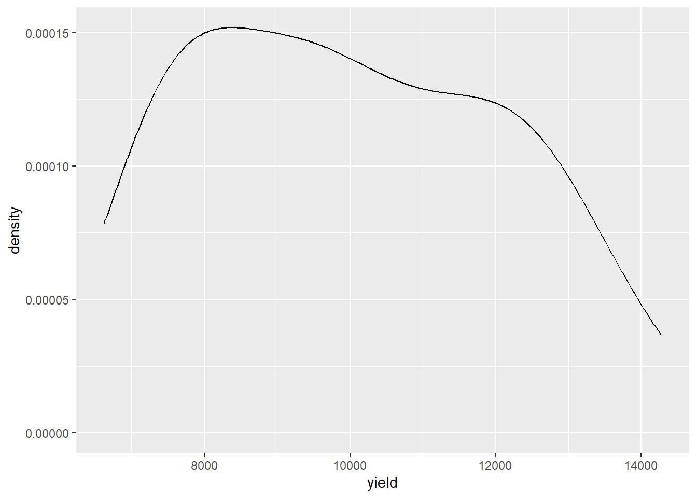

Os gráficos de dispersão ou Scatter plot são representações gráficas do relacionamento entre duas variáveis numéricas. O Scatter plot utiliza pontos para representar essa relação, cada ponto representa o valor de uma variável no eixo horizontal e o valor de outra variável no eixo vertical.
library(readxl)library(tidyverse)
Warning: package 'ggplot2' was built under R version 4.2.3
Warning: package 'tibble' was built under R version 4.2.3
Warning: package 'dplyr' was built under R version 4.2.3
── Attaching core tidyverse packages ──────────────────────── tidyverse 2.0.0 ──
✔ dplyr 1.1.2 ✔ readr 2.1.4
✔ forcats 1.0.0 ✔ stringr 1.5.0
✔ ggplot2 3.4.2 ✔ tibble 3.2.1
✔ lubridate 1.9.2 ✔ tidyr 1.3.0
✔ purrr 1.0.1
── Conflicts ────────────────────────────────────────── tidyverse_conflicts() ──
✖ dplyr::filter() masks stats::filter()
✖ dplyr::lag() masks stats::lag()
ℹ Use the conflicted package (<http://conflicted.r-lib.org/>) to force all conflicts to become errors
Histograma é um gráfico usado para representar a distribuição de frequência de alguns pontos de dados de uma única variável. Os histogramas geralmente classificam os dados em vários “compartimentos” ou “grupos de intervalo” e contam quantos pontos de dados pertencem a cada um desses compartimentos.
y <- milho |>ggplot(aes(x = yield))+geom_histogram(bins =10,color ="black", fill ="green")i <- milho |>ggplot(aes(x = index))+geom_histogram(bins =10,color ="black", fill ="green")library(patchwork)
Warning: package 'patchwork' was built under R version 4.2.3
(y + i) +plot_annotation(tag_levels ="A")
ggsave("figs/histograms.png", bg ="white")
Saving 7 x 5 in image
Gráfico de densidade
#Os gráficos de densidade, também conhecidos como curvas de densidade suavizadas (smooth density), são esteticamente mais atraentes que os histogramas. Abaixo, vemos um gráfico de densidade para nossos dados de altura:
milho |>ggplot(aes(x = yield))+geom_density()

Formato largo para longo
#No formato amplo (wide format), as respostas de um mesmo indivíduos estarão em uma única linha e cada resposta estará em uma coluna separada. #No formato longo (long format), cada linha é um ponto de tempo por assunto. Portanto, cada sujeito (condado) terá dados em várias linhas. Todas as variáveis que não mudam ao longo do tempo terão o mesmo valor em todas as linhas.